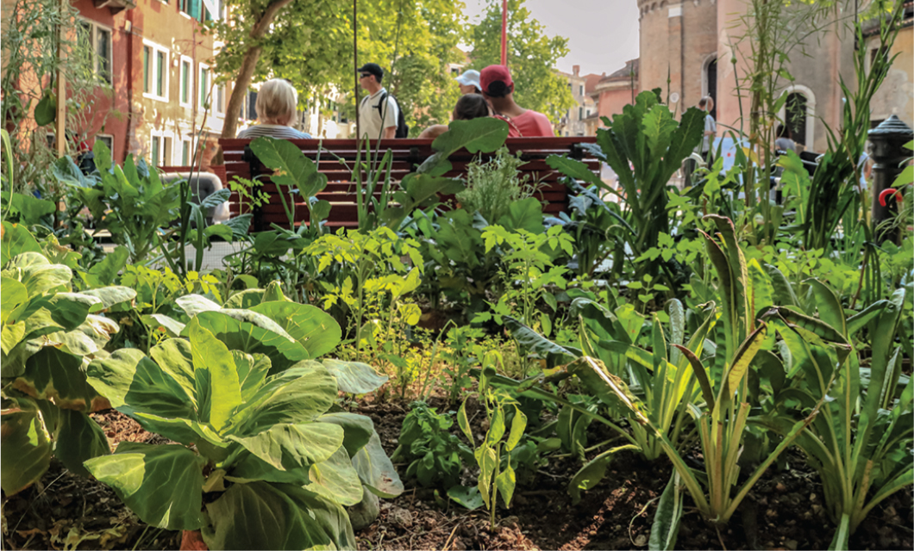
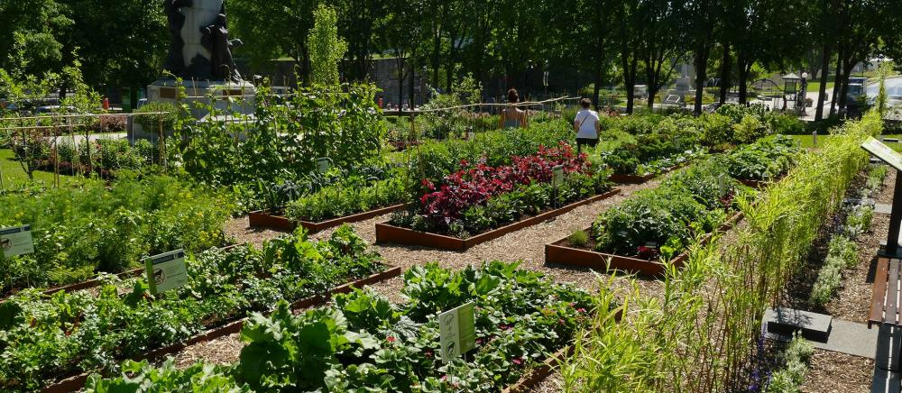
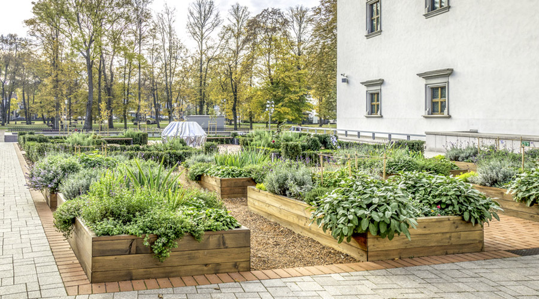

Mais pourquoi se casser la tête à apprendre la botanique ?

Apprendre la botanique est le moyen le plus efficace et le plus sûr de connaître les plantes, de pouvoir les utiliser en toute sécurité et d'en faire les alliées de notre santé.
Quand on s'intéresse aux plantes qu'elles soient médicinales ou comestibles, il arrive toujours un moment où on a envie de faire ses propres cueillettes. Il est alors important de ramasser la bonne plante. Combien de personnes ont mangé des salades de myosotis pensant se régaler de doucette ? D'autres encore font des macérâts à l'arnica avec de la doronic. Si ces confusions ne sont pas toujours dangereuses ou fatales, elles rendent caduques les efforts déployés pour obtenir des préparations de qualité.
Qui n'a jamais été déçu de ne pas pouvoir trouver le nom d'une plante ? Celle que l'on a vu lors d'une randonnée dans les Alpes ou bien celle qui pousse sous notre fenêtre...
Quand on débute le vocabulaire est complexe et notre observation de la plante souvent incomplète : il manque alors le détail qui fait toute la différence... Et on se sent démuni et aussi découragé quand on ouvre une flore botanique, seul véritable outil fiable qui permet d'éviter de dangereuses méprises.
Ce sont les familles qu'il importe de reconnaître en premier !
Elles ont des caractères bien précis qu'il est facile d'observer. En vous familiarisant avec un ou deux représentants des familles principales, vous allez découvrir que la botanique n'est pas un mystère insondable mais bien un domaine passionnant et accessible quand on est bien guidé.
A chaque atelier, nous aborderons une ou deux familles et étudierons leurs caractères, les détails qui les différencient des autres. Nous verrons comment reconnaître ces familles. Puis à l'intérieur de chaque famille nous verrons les détails à bien observer sur la plante pour déterminer son nom avec la plus grande certitude.
Il vous sera ensuite plus simple d'utiliser les clés de détermination d'une flore botanique. A vous le chemin de l'autonomie et du plaisir de découvrir les plantes et leurs merveilles !


Bienvenue sur notre site de botanique
Pour commencer
Ici nous allons parler de botanique urbaine, pourquoi et comment vous occupez de vos plantes